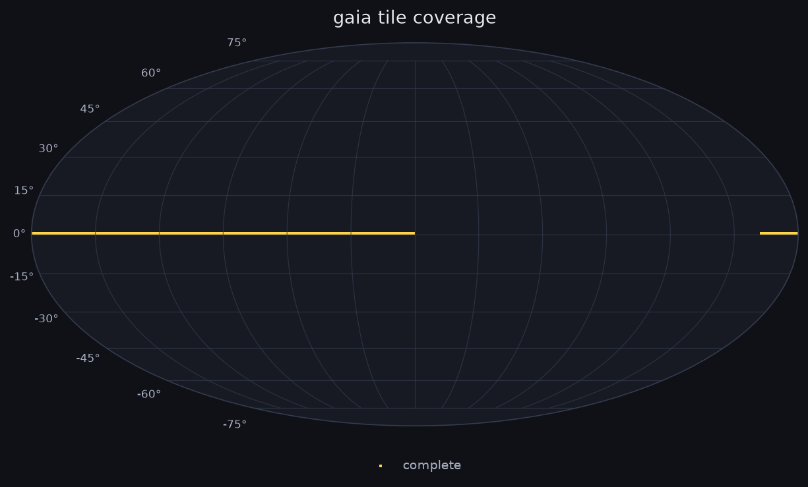
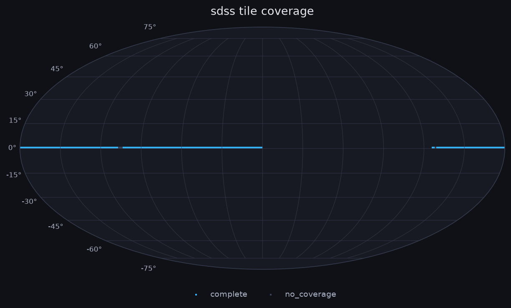
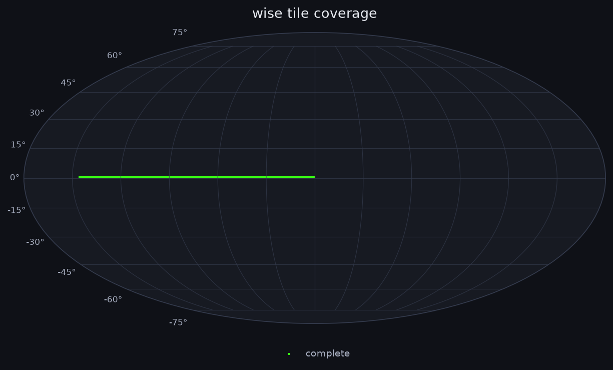
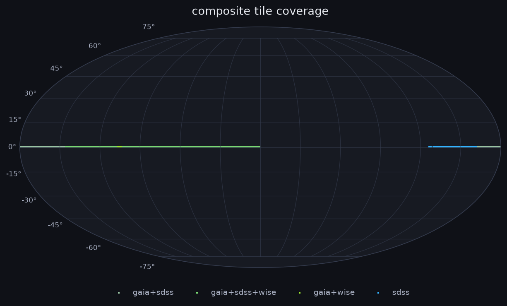

Figures below are generated from the pipeline database (8999.8 MB, last modified 2026-08-20 21:57) at 2026-08-20 22:04.
Mollweide projection of scanned sky tiles, coloured by scan status, per source.




| Objects scanned | 9,271,673 |
|---|---|
| Candidates flagged | 1,400,000 |
| Candidates triaged | 82,941 |
| Tiles complete | 700 / 64,800 |
| Tiles no coverage | 0 |
| Tiles pending | 64,098 |
| Tiles failed | 0 |
| Objects scanned | 1,745,338 |
|---|---|
| Candidates flagged | 1,175,945 |
| Candidates triaged | 24,419 |
| Tiles complete | 712 / 64,800 |
| Tiles no coverage | 56 |
| Tiles pending | 64,031 |
| Tiles failed | 0 |
Reference dataset only -- not scored by the Isolation Forest, so candidates/triaged are always 0 by design. Reached via a local crossmatch join instead (see Crossmatch coverage below).
| Objects scanned | 7,510,114 |
|---|---|
| Candidates flagged | 0 |
| Candidates triaged | 0 |
| Tiles complete | 656 / 64,800 |
| Tiles no coverage | 0 |
| Tiles pending | 64,143 |
| Tiles failed | 0 |
| Run ID | Type | Status | Started | Finished |
|---|---|---|---|---|
| 3531 | scan_tile | running | 2026-08-20 11:57:30 | — |
| 3530 | score_candidates | finished | 2026-08-20 11:53:01 | 2026-08-20 11:57:19 |
| 3529 | scan_tile_wise | finished | 2026-08-20 11:52:33 | 2026-08-20 11:53:00 |
| 3528 | scan_tile_gaia | finished | 2026-08-20 11:36:51 | 2026-08-20 11:52:12 |
| 3527 | scan_tile | finished | 2026-08-20 11:23:11 | 2026-08-20 11:36:22 |
| 3526 | scan_tile_wise | finished | 2026-08-20 11:22:33 | 2026-08-20 11:22:59 |
| 3525 | scan_tile_gaia | finished | 2026-08-20 11:08:31 | 2026-08-20 11:22:14 |
| 3524 | scan_tile | finished | 2026-08-20 10:53:47 | 2026-08-20 11:08:01 |
| 3523 | scan_tile_wise | finished | 2026-08-20 10:53:07 | 2026-08-20 10:53:35 |
| 3522 | scan_tile_gaia | finished | 2026-08-20 10:38:53 | 2026-08-20 10:52:43 |
| 3521 | scan_tile | finished | 2026-08-20 10:25:40 | 2026-08-20 10:38:29 |
| 3520 | scan_tile_wise | finished | 2026-08-20 10:24:57 | 2026-08-20 10:25:29 |